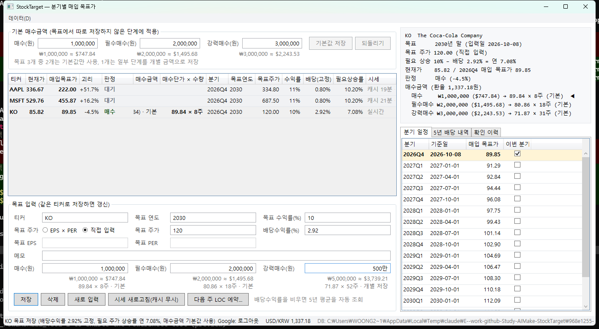
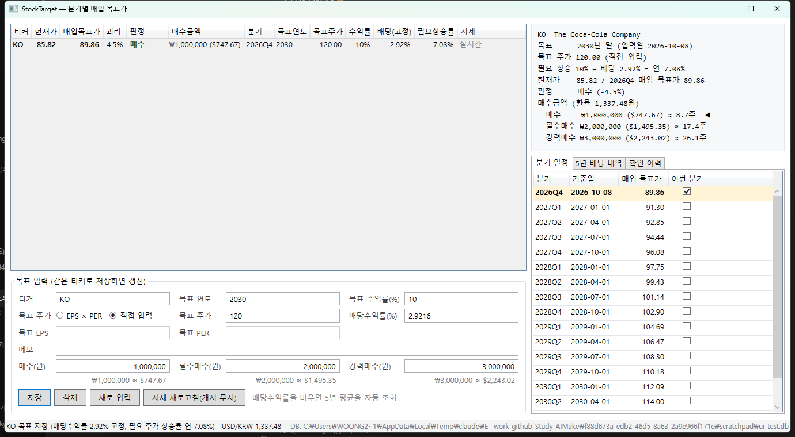
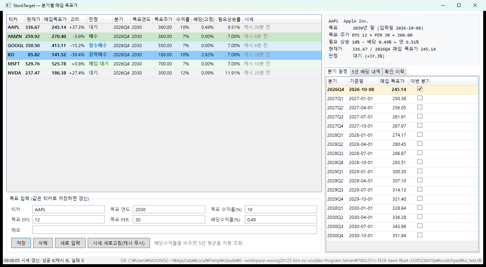
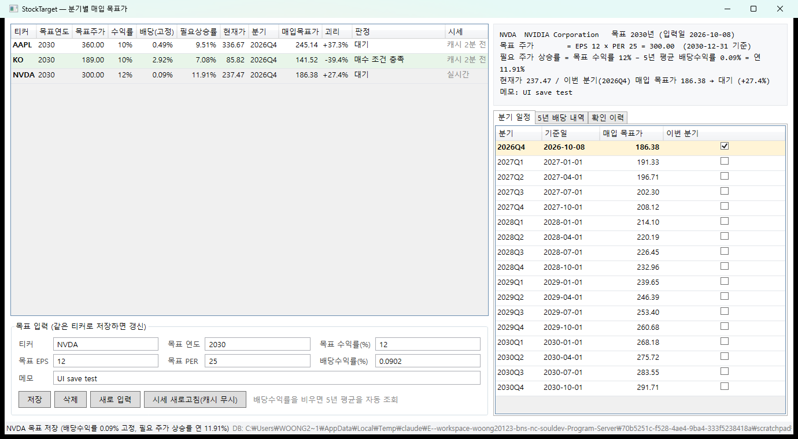
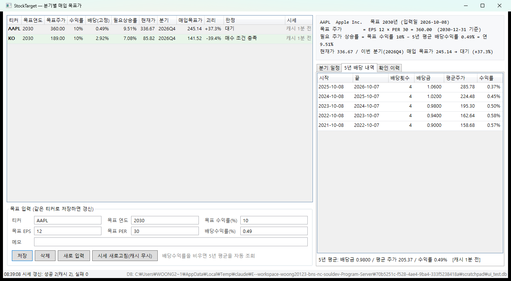
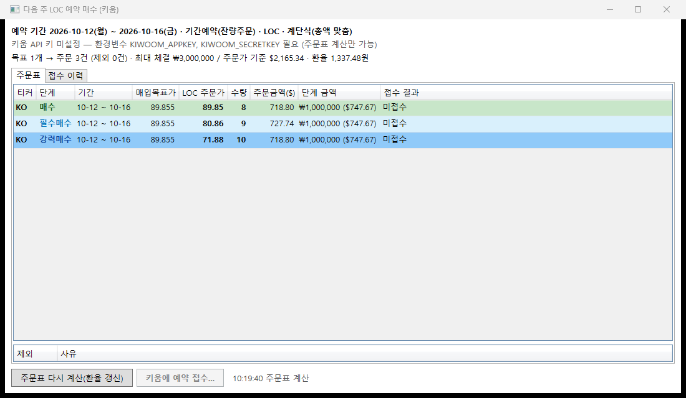

StockTarget 작업 진행
결론 — 목표 EPS·PER·수익률을 입력하면 분기별 매입 목표가를 역산해 보여 주는 기능을 Python 스크립트에서 C# WPF 데스크톱 앱 + SQLite 저장으로 옮겼고, 저장한 목표·분기 일정·5년 배당·확인 이력을 화면에서 볼 수 있다.
- 계산 결과가 Python 버전과 일치한다 — KO 2026Q4 매입 목표가 141.52, AAPL 5년 평균 배당수익률 0.49%.
- 테스트: 단위 90개 + 실데이터 2개 통과, UI 자동화로 "입력 → 저장 → 조회 → 이력 기록" 흐름 확인.
- 판정은 화면에 매수 · 대기 두 가지로 보이고, 매수 강도는 신호 막대 1~3칸과 색 진하기로 나타낸다(매수 1단계 ≤ 매입 목표가 · 2단계 −10% 이하 · 3단계 −20% 이하, 매입 대기 +3% 이내는 대기에 합침). 색은 한국어 빨강 매수 · 하늘색 대기, 영어 초록 매수 · 호박색 대기(12장).
- 매수 단계별 매수금액을 원화로 입력하면 USD/KRW 환율(Yahoo
KRW=X)로 환산해 원화·달러로 표시한다. - 목표 주가는 EPS × PER 계산 또는 직접 입력 중에서 선택한다.
- 다음 주 LOC 예약 매수 주문표: 등록 목표의 단계별 매수금액으로 계단식 LOC 주문표를 만들고 복사해 증권사 앱에서 직접 주문할 때 참고한다(10장). 제거 키움 REST API 실주문 접수는 2026-10-09에 앱에서 뺐다(예전 접수 이력은 보존).
- Android 앱(
StockTarget.Mobile): 한국어/영어 전환, 매수 필요 종목 필터, JSON 백업 가져오기, 매입기준 대비 가격 게이지 카드. 영어판은 금액을 달러로 표시 · 입력한다(12장). - 백업 · 동기화: 사용자 데이터를 JSON으로 내보내고 복원한다. Google 로그인 후 본인 Firebase 프로젝트의
users/{uid}에 저장 · 복원해 기기 간에 옮긴다(11장). 미결 실제 Firebase 프로젝트 연결은 미확인(설정값 필요, 요청 형식은 가짜 서버로 검증). - 미결: 분할 당일 전일 종가 보정은 실제 분할 사례가 없어 단위 테스트로만 검증했다.
1. 요구사항과 진행 경과
| # | 요청 | 구현 | 상태 |
|---|---|---|---|
| 1 | 티커를 입력하면 현재 주가를 가져오기 | Python stock_price.py(yfinance) → C# YahooChartClient | 완료 |
| 2 | 최근 5년 배당/주가 평균(배당수익률) | 1년 구간 5개의 (배당금 합계 ÷ 평균 주가) 평균 | 완료 |
| 3 | 조회 데이터 최대 1시간 캐시 | SQLite cache 테이블, TTL 상한 3600초 | 완료 |
| 4 | 주식 분할 고려 | 분할 반영 데이터 사용 + 분할 이력 표시 + 분할 직후 전일 종가 보정 | 완료 |
| 5 | 목표 EPS·PER·수익률 → 분기별 매입 목표가 (배당률 차감) | TargetCalculator | 완료 |
| 6 | C#으로 작성, SQLite 저장, 저장 데이터를 보는 뷰 | .NET 9 WPF 앱(사용자 선택), DB는 %LOCALAPPDATA%\StockTarget\stocktarget.db | 완료 |
| 7 | 작업 진행 문서를 HTML로 프로젝트에 추가 | 이 문서 (docs/progress.html, 솔루션 폴더 docs) | 완료 |
| 8 | 다른 곳에서 재구성할 때 필요한 정보·코드 문서 | docs/rebuild-guide.html — 전체 소스 18개 + 복원 스크립트 생성 버튼. 생성기 docs/tools/make_rebuild_guide.py | 완료 |
| 9 | 현재가·분기 매입 목표가를 맨 앞으로, 매수(녹색)/매입 대기 5% 이내(연한 녹색, #14에서 3%로 변경)/대기(회색) | TargetCalculator.Classify + BuyStatus, 목록·확인 이력 공용 행 스타일 | 완료 |
| 10 | −10% 이하 필수매수(하늘색), −20% 이하 강력매수(파란색) 추가 | BuyStatus.MustBuy/StrongBuy, 상수 MustBuyPct=10, StrongBuyPct=20 | 완료 |
| 11 | 분기 일정 · 5년 배당 내역 · 확인 이력 영역을 작게 | 오른쪽 패널 고정 폭 440px(최소 360, 구분선으로 조절), 탭 표 열 폭 축소, 요약 문구를 짧은 줄로 정리 | 완료 |
| 12 | 매수 단계별 매수금액을 원화로 입력, 원화·달러로 표시 | BuyAmounts(매수·필수매수·강력매수), Money(입력 해석·환산), 환율 StockService.GetUsdKrwAsync(KRW=X, 1시간 캐시). 입력칸 아래 달러 미리보기, 목록 매수금액 열, 요약에 단계별 금액·주식 수 | 완료 |
| 13 | 목표 주가를 EPS × PER 대신 직접 입력하는 선택 조건 | TargetPlan.TargetPriceInput(있으면 우선), 입력 폼 라디오 버튼 EPS × PER / 직접 입력 | 완료 |
| 14 | 매입 대기 범위를 5% → 3% 이내로 | TargetCalculator.NearPct = 3 | 완료 |
| 15 | 등록 목록 기준 다음 주(월~금) 키움증권 API로 미국주식 LOC 예약 매수 | ReservationPlanner(주문표) · KiwoomClient(au10001 · usa10098 · ust21200) · ReservationService(중복 방지) · ReservationWindow. 기간예약(잔량주문) · LOC · 계단식(총액 맞춤) | 접수 제거 주문표만 유지(#22) |
| 16 | 데이터를 JSON으로 추출 · 복원, 기기 간 호환을 위해 Firebase에 저장, Google 로그인으로 고유 키 | BackupData/BackupSerializer(형식 v1), StockDatabase.ExportBackup/ReplaceWithBackup, FirebaseClient(Auth · Realtime Database REST), GoogleLoopbackSignIn(PKCE), CloudSessionStore(DPAPI). 메뉴 데이터 | 구현 실연결 미확인 |
| 17 | 기본으로 쓸 매수금액을 입력해 관리. 평소에는 기본 매수금액을 쓰고, 입력값이 다를 때만 목표에 저장 | DB settings 테이블(StockDatabase.GetDefaultAmounts/SaveDefaultAmounts), BuyAmounts.WithDefaults(비운 단계 = 기본값) · ExceptDefaults(기본값과 같은 단계는 저장 안 함). 화면 위쪽 기본 매수금액 영역, 목표 입력칸은 기본값으로 채워지고 단계마다 · 기본 / · 개별 저장 표시. 예약 주문표 · 백업(형식 v2) · Firebase에도 반영 | 완료 |
| 18 | 매수금액 옆에 매수단가별로 살 주식 수를 내림해서 표시 | 매수단가 = 이번 분기 매입 목표가 × (1 − 단계 할인율) = LOC 주문가(ReservationPlanner.LimitPrice), 주식 수 = 단계 금액 ÷ 환율 ÷ 매수단가 내림(Money.Shares). 목록 매수단가 × 수량 열(현재 판정 단계), 요약의 단계별 줄, 목표 입력칸 아래 둘째 줄 | 완료 |
| 19 | 구동 옵션으로 키움증권 연동 기능 제어 | --kiwoom off|mock|real(StartupOptions, KiwoomMode). off = 주문표 계산만 · 접수 불가, mock/real = KIWOOM_ENV보다 우선, 옵션 없음 = 기존처럼 환경변수. 상태 표시줄에 키움: …(실전은 빨간색), 잘못된 옵션이면 오류 창 후 종료 | 제거 옵션 삭제(#22) |
| 20 | 주문표에는 주문 가능한 목록만 표시 | 현재가 ≤ 그 단계 LOC 주문가인(이미 도달한) 단계만 주문(ReservationPlanner.Plan의 currentPrices, 메인 화면의 현재가 사용). 미도달 단계는 제외 목록에 필수매수 · 강력매수 미도달: 현재가 85.82 > 주문가 80.86 · 71.87 (+6.1%), 시세 조회 실패 목표는 현재가 없음. 계단식 금액은 그대로 | 완료 |
| 21 | WPF 데스크톱 앱과 코어 로직을 공유하는 Android 모바일 앱 구성 | StockTarget.Core를 그대로 참조하는 .NET MAUI(net9.0-android) 프로젝트 StockTarget.Mobile 추가. 모바일 카드 리스트, 당겨서 새로고침, 5단계 판정 색상, 종목 상세/수정 및 LOC 예약 화면 구현 | 완료 |
| 22 | 키움에 실제로 주문하는 기능 제외 | KiwoomClient · ReservationService · --kiwoom 옵션 · 상태 표시줄 키움 표시 삭제. 예약 창 접수 버튼 → 주문표 복사. DB reservations · 백업 형식은 예전 이력 호환을 위해 유지(읽기 전용 탭 "예전 키움 접수 이력") | 완료 |
| 23 | 고가주(마켈 등)가 0주로 보이지 않게 최소 1주 | 화면 표시만 Money.DisplayShares(최소 1주). 예약 주문표는 1주 미만 단계를 그대로 제외(실제 금액 초과 주문 방지) | 완료 |
| 24 | 모바일 한국어/영어 전환 옵션 | Localization/L.cs + AppResources(.ko).resx, 툴바 언어 버튼, 선택 언어 저장(Preferences), 셸 재생성으로 즉시 반영 | 완료 |
| 25 | 모바일 JSON 백업 가져오기 | ⋮ 메뉴 JSON 백업 가져오기(FilePicker → BackupSerializer → 확인 → 현재 데이터 자동 백업 → ReplaceWithBackup). 데스크톱 내보내기 파일과 같은 형식 | 완료 |
| 26 | 모바일: 매수가 필요한 종목만 보는 필터 | 상단 스위치 매수 필요만 (N), 매수 1~3단계만 표시, 상태 저장 | 완료 |
| 27 | 윈도우: 목표 추가 시 5년 배당 내역이 중복 출력 | 저장 직후 오른쪽 패널 갱신이 두 번 겹쳐 목록이 두 번 채워짐 → 마지막 갱신만 반영(_detailLoadId). 목록에서 종목명을 티커 앞으로 | 수정 |
| 28 | 모바일 메인 화면 정리 · 카드 그래프화 | 상단 한 줄(필터 · 종목추가), 환율 · 목표 개수 문구 제거, 카드 = 종목명 · 판정 / 가격 게이지 / "현재가 · 매입기준" 한 줄(약 84dp). HTML 목업으로 검토 후 A안 적용 | 완료 |
| 29 | 판정 표기를 "매수" + 강도 표식으로, 언어별 색, 단계 이름 변경 | Core BuyLevel() · Verdict() · VerdictText(), 신호 막대 1~3칸(모바일 BoxView · 윈도우 VerdictCell), 단계 이름 매수 1 · 2 · 3단계, 대기 색 한국어 하늘색 · 영어 호박색 | 완료 |
| 30 | 영어판 원화 표시를 모두 달러로, 특히 단계별 매수금액 | 목록 · 상세 · 예약 주문표 금액과 입력 화면 Buy amount per stage (USD). 저장은 원화(환율 환산), 손대지 않은 칸은 원래 원화 값 유지 | 완료 달러 입력 저장 미확인 |
2. 계산 규칙
목표 주가 = 목표 EPS × 목표 PER 또는 직접 입력값 (목표 연도 12월 31일 기준, 직접 입력이 우선)
필요 주가 상승률 g = 목표 수익률 − 최근 5년 평균 배당수익률 (입력 시점 값으로 고정)
분기별 매입 목표가 = 목표 주가 ÷ (1 + g) ^ (기준일 → 목표일 남은 년수)
기준일: 첫 분기는 입력일, 이후는 각 분기 첫날 / 년수 = 남은 일수 ÷ 365.25매입 목표가 이하로 사면 "주가 상승 + 배당"으로 목표 수익률을 기대할 수 있다는 뜻이다. 시간이 지날수록 남은 기간이 줄어 허용 매입가는 올라간다.
매수금액 (원화 입력 → 달러 환산)
| 항목 | 규칙 | 예 |
|---|---|---|
| 입력 | 단계(매수 · 필수매수 · 강력매수)마다 원 단위 금액. 쉼표·₩·원 무시, 만/억 단위 허용, 비우면 해당 단계 없음, 음수·문자는 저장 거부 | 100만 → 1,000,000 · 1.5억 → 150,000,000 |
| 환율 | Yahoo KRW=X 현재가(1달러당 원), 시세와 같은 캐시(최대 1시간). 조회 실패 시 원화만 표시 | USD/KRW 1,337.48 |
| 달러 환산 | 원화 ÷ 환율 | ₩1,000,000 → $747.67 |
| 목록 매수금액 열 | 현재 판정 단계의 금액만 표시(매입 대기 · 대기 · 조회 실패면 빈칸) | 매수 → ₩1,000,000 ($747.67) |
| 요약 패널 | 입력한 단계 전부를 원화·달러로, 달러 종목이면 살 수 있는 주식 수(달러 ÷ 현재가), 현재 판정 단계에 ◀ | 매수 ₩1,000,000 ($747.67) ≈ 8.7주 ◀ |
예시: KO (2030년 EPS 10.5, PER 18, 목표 수익률 10%)
| 단계 | 식 | 값 |
|---|---|---|
| 목표 주가 | 10.5 × 18 | 189.00 |
| 5년 평균 배당수익률 | 1년 구간 2.69 / 2.97 / 3.08 / 3.00 / 2.87%의 평균 | 2.92% |
| 필요 주가 상승률 | 10% − 2.92% | 연 7.08% |
| 2026Q4 매입 목표가 | 189 ÷ 1.0708^(1545/365.25) | 141.52 |
| 판정 | 매입 목표가 b 대비 현재가: ≤ b×0.80 강력매수(파란색) / ≤ b×0.90 필수매수(하늘색) / ≤ b 매수(녹색) / ≤ b×1.03 매입 대기(연한 녹색) / 그 위 대기(회색) | KO −39.4% 강력매수 |
| 2030Q4 매입 목표가 | 189 ÷ 1.0708^(91/365.25) | 185.81 |
배당수익률 계산 기준
- 구간: 마지막 거래일부터 1년씩 거슬러 올라간 5개 구간. 달력 연도를 쓰면 진행 중인 올해가 왜곡된다.
- 주가: 분할만 반영한 종가(배당 미반영). 배당 반영 수정주가를 쓰면 과거 주가가 낮아져 수익률이 부풀려진다.
- 분할: 종가·배당 모두 현재 주식 수 기준으로 환산된 값이라 같은 기준끼리 나눈다. 예: NVDA 2024-06-10 10:1 분할 전 배당 $0.04 → 0.004.
3. 구조
MainWindowMainViewModelStockService캐시 판단 · 분할 보정
YahooChartClientYahoo chart API
StockService / MainViewModelStockDatabaseSQLite
TargetCalculator, DividendYieldCalculator, SplitAdjuster| 프로젝트 | 파일 | 역할 |
|---|---|---|
StockTarget.Core(net9.0) | Models.cs | 시세·배당·분할·목표·분기 행 레코드 |
Calculators.cs | 목표가 역산, 5년 배당수익률, 분할 보정(네트워크·DB 없는 순수 함수) | |
YahooChartClient.cs | chart API 한 번으로 현재가·일별 종가·배당·분할 수신, JSON 파싱 | |
StockDatabase.cs | SQLite 스키마·목표 CRUD·확인 이력·캐시(TTL) | |
StockService.cs | 캐시 우선 조회, 분할 직후 보정 후 캐시 무효화, USD/KRW 환율, 확인 이력 기록 | |
Reservations.cs | 다음 주 계단식 LOC 주문표(ReservationPlanner), 접수 · 중복 방지(ReservationService) | |
KiwoomClient.cs | 키움 REST API: 토큰, 거래소구분 조회, 미국주식 예약 매수. 키는 환경변수에서만 읽음 | |
Backup.cs | 기기 간 백업 형식(JSON v1)과 검증 | |
Cloud.cs | Google OAuth(PKCE) 토큰 교환, Firebase 로그인 · 토큰 갱신 · Realtime Database 저장/읽기 | |
StockTarget.App(net9.0-windows, WPF) | MainWindow.xaml | 목표 목록·입력 폼 / 요약·분기 일정·5년 배당·확인 이력 탭 |
ReservationWindow.xaml | 다음 주 LOC 예약 매수 주문표 · 접수 · 접수 이력 | |
Services/CloudAuth.cs, MainViewModel.Backup.cs | 브라우저 Google 로그인(127.0.0.1 루프백), 로그인 정보 DPAPI 암호화 저장, 데이터 메뉴 동작 | |
ViewModels/*.cs | MVVM(외부 라이브러리 없음), 비동기 명령 | |
StockTarget.Tests(xUnit) | CoreTests.cs | 계산·파싱·DB·캐시 단위 테스트 + 실데이터 테스트 |
4. 데이터 수집 · 저장 · 캐시
수집: Yahoo Finance chart API (v8)
| 용도 | 요청 | 받는 값 |
|---|---|---|
| 현재가 | range=1d | 현재가, 전일 종가, 통화, 거래소, 종목명 |
| 5년 배당수익률 | range=6y&events=div,split | 일별 종가(분할 반영), 배당, 분할 |
| 분할 보정(필요할 때만) | range=1mo&events=split | 최근 분할 |
| USD/KRW 환율 | KRW=X, range=1d | 1달러당 원(매수금액 달러 환산용) |
.NET HttpClient는 Windows 인증서 저장소를 사용하므로 회사망 SSL 검사 환경에서도 추가 설정 없이 접속된다.
(Python yfinance는 curl_cffi 자체 CA만 믿어 실패했고, Windows 인증서를 묶은 CA 파일로 해결했었다.)
기본 User-Agent로는 Yahoo가 429를 돌려줘 브라우저 UA를 지정한다.
저장: SQLite
| 테이블 | 키 | 내용 |
|---|---|---|
targets | symbol | 입력일, 목표 연도, EPS, PER, 목표 수익률, 고정 배당수익률, 메모, 단계별 매수금액(buy_krw · must_buy_krw · strong_buy_krw), 직접 입력 목표 주가(target_price, 비면 EPS × PER). 같은 티커로 저장하면 갱신. 새 컬럼은 이전 DB에 앱 시작 시 자동 추가 |
price_checks | symbol + check_date | 조회한 날의 분기·현재가·매입 목표가(같은 날 다시 조회하면 갱신). 목표를 지우면 함께 삭제 |
cache | quote:SYM / dividend:SYM | 조회 결과 JSON과 조회 시각. 저장할 때 1시간 넘은 항목 정리 |
reservations | symbol + stage + start_date + end_date + env | 키움에 접수한 LOC 예약(주문가 · 수량 · 금액 · 예약번호 · 주문예정일). 같은 키로는 다시 접수하지 않는다 |
캐시 · 분할 처리
- 시세·배당 모두 최대 1시간 재사용한다. 화면에 "캐시 N분 전"으로 표시하고, "시세 새로고침(캐시 무시)" 버튼으로 강제 갱신한다.
- 실패 결과(없는 티커 등)는 캐시하지 않는다. 형식이 바뀐 옛 캐시는 무시한다.
- 변동률이 30% 이상이면 최근 5일 안의 분할을 확인하고, 전일 종가가 분할 전 값이면 분할 비율로 나눠 보정한다. 이미 보정된 값은 건드리지 않는다. 보정이 일어나면 그 티커의 캐시를 버린다.
5. 화면

(기본)이다.
목표 입력칸은 기본값으로 채워지고, 강력매수만 500만으로 바꾸면 그 단계에 · 개별 저장이 표시된다. 이 상태로 저장하면 이 목표에는 강력매수 500만만 저장된다.
MSFT처럼 일부 단계를 따로 저장한 목표는 아래 요약 줄에 개수로 나온다.기본 매수금액 규칙
| 목표 입력칸 값 | 목표에 저장되는 값 | 실제로 쓰는 금액 | 기본값을 바꾸면 |
|---|---|---|---|
| 기본값 그대로(처음에 채워진 값) | 없음(null) | 기본값 | 따라 바뀐다 |
| 비움 | 없음(null) | 기본값 | 따라 바뀐다 |
| 기본값과 다른 금액 | 그 금액 | 그 금액 | 그대로 |
| 0 | 0 | 그 단계는 사지 않음(목록 · 주문표에서 빠짐) | 그대로 |

₩1,000,000 ($747.67), 요약에 단계별 금액·주식 수와 ◀, 상태 표시줄에 환율.


6. 검증
| 구분 | 내용 | 결과 |
|---|---|---|
| 판정 | 5단계 경계(−20%, −10%, 같음, +3% 각각 포함/초과, 이전 기준 +5%는 대기), 값 없음, 문구, 확인 이력 동일 규칙 | 14 통과 |
| 계산 | 목표가·필요 상승률, 분기 범위(17개), 손계산 대조, 분기마다 매입가 상승, 배당 > 목표 수익률, 잘못된 입력 3종 | 9 통과 |
| 목표 주가 직접 입력 | 직접 입력값 우선(EPS·PER 0 허용), 같은 목표 주가면 EPS × PER과 같은 일정, 0·음수 거부 | 3 통과 |
| 매수금액 | 입력 해석 6종(쉼표·₩·만·만원·억·0), 빈 값 3종, 잘못된 값 3종, 달러 환산·표기, 판정 단계별 금액 | 14 통과 |
| 배당수익률 | 1년 구간 경계, 구간 밖 분할 제외, 분할 비율 표기 | 3 통과 |
| 분할 보정 | 정분할 미보정 / 이미 보정 / 역분할 / 오래된 분할 / 검사 조건 | 5 통과 |
| API 파싱 | 가격·배당·분할·현지 날짜, 오류 응답, JSON 아닌 응답(429) | 3 통과 |
| LOC 예약 주문표 | 다음 주 월~금(목·월·일·토 기준), 센트 단위 내림, 계단식 차액 3종, 3건 주문 · 수량 내림, 매수금액 없음 · 1주 미만 제외, 분기 경계 분할, 주말 제외 | 10 통과 |
| 키움 API | 가짜 서버로 요청 확인: 토큰 → ust21200 본문(기간예약 2 · 기간 · 거래소 · LOC 30 · 주문가), 토큰 재사용 · 실전 도메인, 오류 코드 예외, 키 비노출, 중복 접수 방지 · 실패 후 계속 | 5 통과 |
| 백업 | 다른 DB로 왕복 시 목표 · 이력 · 예약 동일, 형식(format · version · 날짜 문자열 · null 생략 · 캐시 제외), 교체 시 백업에 없는 데이터 삭제, Realtime Database의 빈 배열 누락, 다른 파일 · 새 버전 거부 3종, 잘못된 백업이면 DB 그대로 | 8 통과 |
| Google · Firebase | PKCE(SHA-256), 인증 URL, 코드 교환, 로그인(uid · Google 번호), 본인 uid 경로 저장 · 읽기, 만료 토큰 자동 갱신, 권한 거부 오류, 설정값 비노출 (가짜 서버) | 8 통과 |
| DB · 캐시 | 목표 갱신·삭제(이력 동반 삭제), 하루 1행, 59분 적중/60분 만료, TTL 상한, 무효화, JSON 왕복, 매수금액 저장·비우기, 직접 입력 목표 주가 왕복, 이전 스키마 DB에 컬럼 자동 추가, 기본 매수금액 저장 · 단계 비우기 · 해제 | 9 통과 |
| 주식 수 · 구동 옵션 | 주식 수 내림(3.37→3, 강력매수 단가 177.60에 12주, 딱 나누어떨어지는 경우 이진 오차 없음, 1주 미만 0, 환율 · 가격 없음), --db · --kiwoom 해석 · 대소문자 무시, 잘못된 값 · 값 없음 · 모르는 옵션 거부, mock/real이 KIWOOM_ENV보다 우선, off면 키가 있어도 연동 안 함, 상태 문구 | 11 통과 |
| UI 자동화(주식 수 · 구동 옵션) | KO(매수 판정) 요약 89.84 × 8주 · 80.86 × 18주 · 71.87 × 31주, 목록 열, 입력칸 둘째 줄 확인. --kiwoom off로 실행 → 상태 표시줄 키움: 꺼짐, 예약 창 안내 문구 · 접수 버튼 비활성. --kiwoom on → 구동 옵션 오류 창 | 확인 |
| 도달 단계만 주문 | 현재가 100 · 89.84(주문가와 같음) · 85.82 · 75 · 70 → 주문 0 · 1 · 1 · 2 · 3단계와 제외 사유 문구, 계단식 금액 유지, 현재가 없는 목표 제외, 분기 경계 주는 사유에 분기 표시 | 7 통과 |
| UI 자동화(도달 단계) | 예약 창: KO(−4.5%) 매수 89.84 × 8주 1건만 주문표에, AAPL · MSFT(대기)와 KO 필수 · 강력매수는 제외 목록에 사유 표시 | 확인 |
| 기본 매수금액 | 비운 단계만 기본값으로 채움(0은 유지), 기본값과 같은 단계는 저장하지 않음, 저장값 + 기본값 = 입력값, 주문표에 기본값 적용(0 단계 제외 · 계단식), 백업 왕복, v1 백업은 현재 설정 유지 · v2에 항목 없으면 해제, 음수 거부 | 6 통과 |
| 실데이터 | KO 5년 평균이 Python 결과(2.92%)와 일치, NVDA 분할 전 배당이 0.004로 환산 | 2 통과 |
| UI 자동화 | 임시 DB로 앱 실행 → 목록·요약·탭 표시, 입력 폼으로 NVDA 저장(배당률 자동 조회 0.0902%) → DB에 목표·확인 이력 기록 | 확인 |
| UI 자동화(추가) | KO를 매수금액 100만 / 2,000,000 / 3000000으로 저장 → 달러 미리보기·목록 열·요약 표시. EPS 6 × PER 25(−23.6% 강력매수) 및 목표 주가 직접 입력 120(−4.5% 매수) 두 경우 확인 | 확인 |
| UI 자동화(예약) | 다음 주 LOC 예약... → KO 3건(89.85×8 · 80.86×9 · 71.88×10), 키 미설정이라 접수 버튼 비활성 | 확인 |
| UI 자동화(기본 매수금액) | 실제 DB 복사본으로 실행 → 기본값 100만 / 2,000,000 / 300만 저장(입력칸이 1,000,000 형식으로 정리, 저장 버튼 비활성) → AAPL 요약 세 단계 (기본), 목표 입력칸 기본값 채움, 강력매수 500만 입력 시 · 개별 저장 | 확인 |
Python 버전과 결과 대조
| 항목 | Python | C# | 차이 |
|---|---|---|---|
| KO 2026Q4 매입 목표가 | 141.52 | 141.52 | 0 |
| KO 5년 평균 배당수익률 | 2.92% | 2.92% | 0 |
| AAPL 5년 평균 배당수익률 | 0.49% | 0.49% | 0 |
| NVDA 5년 평균 배당수익률 | 0.09% | 0.09% | 0 |
7. 진행 중 발견·해결한 문제
| 문제 | 원인 | 조치 |
|---|---|---|
| Python: 모든 티커가 "시세 없음" | ① 회사망 SSL 검사로 인증서 검증 실패 ② fast_info.get('last_price')는 camelCase 키만 받음 | Windows 인증서를 묶은 CA로 검증, 속성 접근으로 변경 |
| NVDA 배당수익률이 Yahoo 값(0.03%)의 3배 | 오류 아님. 2026-06 분기 배당 $0.01 → $0.25 인상으로 최근 1년 수익률 0.26% | 분할 반영 여부를 원자료로 확인 후 계산 유지 |
| C# 테스트 1건 실패(141.51 vs 141.52) | 테스트 기대값 오류. Python은 반올림 전 배당률(2.92063…)로 계산 | 기대값과 주석 수정, 두 경우 모두 검증 |
| 목록 열이 잘려 판정·시세가 안 보임 | 고정 열 너비 합이 패널보다 큼 | 열을 내용 맞춤(Auto)으로, 좌우 비율 13:8 |
| WPF 빌드 오류 CS0103 | WPF 프로젝트는 System.Net.Http가 암시적 using에 없음 | using 추가 |
| UI 자동화 스크립트 구문 오류 | 한글이 든 .ps1을 BOM 없이 저장 → Windows PowerShell 5.1이 CP949로 읽음 | UTF-8 BOM 추가 |
| 요약의 단계명 정렬이 어긋남 | 고정폭 글꼴에서 한글은 2칸 폭인데 문자 수로 채움 | 표시 폭(한글 2칸) 기준으로 공백 계산 |
| 테스트 기대값 오류(직접 입력 마지막 분기 = 목표 주가) | 마지막 분기 기준일이 10/1이라 목표일까지 3개월이 남음 | BuyPrice 식으로 기대값 계산 |
| 키움 공식 저장소에 예약 TR 없음 | 저장소 스펙(2026-09-15 커밋)이 가이드 사이트보다 늦음. 사이트 목록에는 ust21200 등이 있음 | 가이드 사이트에서 받은 JSON 명세(kiwoom-rest-api-spec.json)로 확인 |
| 주문표 테스트 기대값 오류(80.85 vs 80.86) | b ≈ 89.849를 손으로 반올림해 계산 | 기대값을 b로부터 계산 |
| 매입목표가 89.86인데 LOC 주문가 89.85 | 표시는 반올림, 주문가는 센트 단위 내림(b = 89.855) | 예약 창 매입목표가를 소수 3자리로 표시 |
8. 빌드 · 실행
cd E:\work\tools\StockTarget
dotnet build # 전체 빌드
dotnet test # 단위 테스트
set STOCKTARGET_LIVE=1 && dotnet test # 실데이터 테스트 포함
dotnet run --project src\StockTarget.App # 앱 실행
src\StockTarget.App\bin\Debug\net9.0-windows\StockTarget.App.exe --db D:\temp\test.db # 다른 DB로 실행| 구동 옵션 | 동작 | 상태 표시줄 |
|---|---|---|
--db <경로> | 다른 SQLite 파일 사용(기본 %LOCALAPPDATA%\StockTarget\stocktarget.db) | DB: … |
(--kiwoom 없음) | 기존과 같음: 키가 있으면 KIWOOM_ENV(real이면 실전, 그 외 모의투자) | 키움: 모의투자 / 키움: 실전 |
--kiwoom off | 키움 연동 끔. 예약 창은 주문표 계산만 하고 접수 버튼 비활성화(키가 있어도) | 키움: 꺼짐(--kiwoom off) |
--kiwoom mock | KIWOOM_ENV와 상관없이 모의투자 | 키움: 모의투자(--kiwoom mock) |
--kiwoom real | KIWOOM_ENV와 상관없이 실전(접수 시 경고 대화상자는 그대로) | 키움: 실전(--kiwoom real) 빨간색 |
사용 순서: 입력 폼에 티커·목표 연도·EPS·PER·목표 수익률 입력 → 배당수익률을 비우면 5년 평균을 자동 조회해 고정 → 저장. 이후에는 앱을 열 때마다(분기마다) 이번 분기 매입 목표가와 현재가가 비교되고 확인 이력이 쌓인다.
목표 주가를 따로 정했다면 목표 주가 → 직접 입력을 고르고 값을 넣는다(EPS·PER 칸은 비활성화). 단계별 매수금액(원)을 넣으면 바로 아래에 달러 금액이 보이고, 저장 후 목록·요약에 원화·달러로 표시된다.
9. 한계와 다음 작업
입력값의 무게 — 결과는 목표 EPS 가정에 크게 좌우된다. 예: KO 최근 4분기 EPS는 3.33인데 2030년 10.5는 약 3배 성장을 가정한다. 현재 EPS와 "목표 달성에 필요한 EPS 연 성장률"을 함께 보여 주면 가정을 점검하기 쉽다.
- Yahoo chart API는 비공식이라 형식 변경·일시 차단 가능. 실패는 화면에 사유로 표시되고 캐시에 남지 않는다.
- 분할 당일 보정은 실제 사례 없이 단위 테스트로만 검증(미결).
- 필요 주가 상승률은 요청대로 단순 차감(10% − 2.92%). 배당 재투자 복리식((1.10 ÷ 1.0292) − 1 = 6.88%)은 옵션으로 추가 가능.
- Python 버전
targets.json의 목표는 C# DB로 옮기지 않았다(필요하면 가져오기 기능 추가). - 키움 예약 접수는 제거됨(2026-10-09). 주문표를 복사해 증권사 앱에서 직접 주문한다.
- 모바일 영어판에서 달러로 입력한 금액을 저장하는 흐름은 에뮬레이터에서 직접 입력해 확인하지 않았다(미결). 금액은 원화로 저장되므로 환율에 따라 달러 표시가 조금씩 달라진다.
- 윈도우 앱 판정 칸 신호 막대 · 선택 행 흰 글씨는 화면으로 확인하지 못했다(미결).
- 후보: 현재 EPS·필요 성장률 표시, 목표 이력(버전) 보관, 매수 조건 충족 시 Teams 알림, 단일 exe 배포(
dotnet publish -r win-x64 --self-contained).
10. 키움 LOC 예약 매수
2026-10-09 변경 — 키움 실주문 접수 기능(KiwoomClient · ReservationService · --kiwoom 옵션)은 앱에서 제거했다.
주문표 계산(ReservationPlanner)과 주문표 복사만 남아 있고, 아래 API 표와 접수 흐름은 예전 버전 기록이다.
예전에 접수한 이력은 DB · 백업에 그대로 두고 예약 창의 "예전 키움 접수 이력" 탭에서 읽기 전용으로 본다. 단계 이름은 매수 1 · 2 · 3단계로 바뀌었다(12장).
단계별 매수금액(원)
ReservationPlanner계단식 LOC 주문표
(접수 확인 대화상자)
ReservationService중복 확인 · DB 기록
KiwoomClientau10001 → usa10098 → ust21200
| 단계 | LOC 주문가 | 주문 금액(원) | 종가가 이 구간이면 총 체결 |
|---|---|---|---|
| 매수 | b (센트 내림) | 매수 금액 | 매수 금액 |
| 필수매수 | b × 0.90 | 필수매수 − 매수 | 필수매수 금액 |
| 강력매수 | b × 0.80 | 강력매수 − 필수매수 | 강력매수 금액 |
| API | TR | 사용 값 |
|---|---|---|
| 접근토큰 발급 | au10001 /oauth2/token | grant_type=client_credentials, 앱키 · 시크릿키 → token, expires_dt(만료 5분 전까지 재사용) |
| 거래소구분 조회 | usa10098 /api/us/stkinfo | stk_cd → stex_tp(ND NASDAQ · NY NYSE · NA AMEX) |
| 예약 매수주문 | ust21200 /api/us/ordr | rsrv_ord_tp=2(기간예약 · 잔량주문), rsrv_strt_dt/rsrv_end_dt(YYYYMMDD), stex_tp, stk_cd, ord_qty, ord_uv(USD), trde_tp=30(LOC) → rsrv_ord_no, frcs_dt |
접속 정보 — 앱키 · 시크릿키는 코드 · DB · 문서에 두지 않고 사용자 환경변수에서만 읽는다:
KIWOOM_APPKEY, KIWOOM_SECRETKEY, KIWOOM_ENV(real이면 실전, 없으면 모의투자).
키가 없거나 구동 옵션 --kiwoom off면 주문표 계산만 되고 접수 버튼이 비활성화된다. --kiwoom mock|real은 KIWOOM_ENV보다 우선한다(8. 빌드 · 실행). 접수는 확인 대화상자에서 예를 눌러야만 하고, 실전이면 경고 표시를 한다.

| 확인 항목 | 결과 |
|---|---|
| HTS 예약주문 화면 [2120] 도움말 | 입력 07:00 ~ 20:30, 미국 정규장에 자동 주문. 입력 시 증거금 · 잔고를 확인하지 않아 실제 처리 때 거부될 수 있음 |
| 공식 GitHub 저장소(2026-09-15) | 예약 TR 없음 — 가이드 사이트가 더 최신 |
| 실제 등록 목표(2026-10-08) | MSFT 1건, 매수금액 미입력 → 주문표에서 "매수금액 미입력"으로 제외 |
| 실서버 접수 | 미결 키 설정 후 모의투자로 먼저 확인 필요(기간예약에 LOC가 실제로 허용되는지 포함) |
11. 백업 · Firebase 동기화
(캐시 제외)
BackupDataJSON v2
*.json또는
users/{uid}/stocktarget| 메뉴 데이터 | 동작 |
|---|---|
| JSON으로 내보내기 | 목표 · 확인 이력 · 예약 접수 이력 · 기본 매수금액을 JSON 파일로 저장(시세 캐시 제외) |
| JSON에서 복원 | 파일 검사 → 확인 → 현재 데이터를 %LOCALAPPDATA%\StockTarget\backups\before-restore-*.json에 자동 백업 → 백업 내용으로 통째로 교체(한 트랜잭션) |
| Firebase에 저장 | Firebase에 있는 백업 시각 · 건수를 보여 주고 확인 후 덮어씀(마지막 저장이 이김) |
| Firebase에서 복원 | Firebase 백업으로 JSON 복원과 같은 절차 |
| Google 로그인 / 로그아웃 | 브라우저로 Google 로그인 → Firebase uid 발급. 로그인 정보는 DPAPI로 암호화해 firebase-session.dat에 보관, 이후 토큰은 자동 갱신 |
고유 키
Google 로그인 결과로 받는 값은 둘이다. Google 계정 번호(sub, 예: 110248495921238986420)와 Firebase가 그 계정에 발급하는 uid.
같은 Google 계정이면 어느 기기에서 로그인해도 둘 다 같다. 저장 경로는 uid를 쓴다 — Firebase 보안 규칙이 auth.uid로 "본인 경로만" 검사하기 때문이다.
Firebase 준비 (한 번)
- Firebase 콘솔 → 프로젝트 추가.
- Authentication → 시작하기 → 로그인 방법 → Google 사용 설정.
- Realtime Database → 데이터베이스 만들기(지역 선택, 잠금 모드) → 규칙 탭에 아래 규칙 게시.
- 프로젝트 설정 → 일반 → 웹 API 키 확인.
- Google Cloud 콘솔(같은 프로젝트) → OAuth 동의 화면 구성(외부, 테스트 사용자에 본인 추가) → 사용자 인증 정보 → OAuth 클라이언트 ID → 유형 데스크톱 앱 → 클라이언트 ID · 보안 비밀.
- 로그인 시 "invalid audience/허용되지 않은 클라이언트" 오류가 나면: Authentication → Google 제공업체 → 외부 프로젝트의 클라이언트 ID 허용 목록에 데스크톱 클라이언트 ID 추가.
%LOCALAPPDATA%\StockTarget\firebase.json(처음 메뉴를 쓰면 빈 양식이 생김)에 값 입력.
{ "ApiKey": "웹 API 키", "DatabaseUrl": "https://프로젝트-default-rtdb.지역.firebasedatabase.app",
"GoogleClientId": "....apps.googleusercontent.com", "GoogleClientSecret": "GOCSPX-..." }Realtime Database 보안 규칙 — 로그인한 사용자가 자기 uid 경로만 읽고 쓴다:
{
"rules": {
"users": {
"$uid": {
".read": "auth != null && auth.uid === $uid",
".write": "auth != null && auth.uid === $uid"
}
}
}
}데이터는 사용자 본인의 Firebase 프로젝트(Google Cloud, 고른 지역)에만 저장되고, 앱은 firebase.json에 적힌 프로젝트와만 통신한다.
웹 API 키 · 데스크톱 클라이언트 보안 비밀은 공개돼도 보안 규칙이 막아 주는 값이지만, 저장소에 올리지는 않는다(%LOCALAPPDATA%에만 있음).
| JSON 필드 | 내용 |
|---|---|
format · version · exportedAt | stocktarget-backup · 2 · 내보낸 시각. 다른 파일이나 더 새 버전은 거부(v1 백업은 읽을 수 있다) |
targets[] | symbol, inputDate, targetYear, eps, per, returnPct, dividendYieldPct, memo, targetPrice, buyKrw, mustBuyKrw, strongBuyKrw (null은 생략) |
priceChecks[] | symbol, checkDate, quarter, price, buyPrice |
reservations[] | symbol, stage, start, end, price, quantity, amountKrw, env, reservationNo, scheduledDate, createdAt |
defaultAmounts (v2) | buyKrw, mustBuyKrw, strongBuyKrw. 기본 매수금액이 없으면 생략. 복원할 때 v2에서 없으면 해제, v1 백업이면 현재 설정 유지(그래서 형식 버전을 올렸다 — Firebase는 빈 객체를 저장하지 않아 v1과 구분할 수 없다) |
12. 2026-10-09 변경: 모바일 화면 · 판정 표기 · 키움 접수 제거
UI 구조는 HTML 목업(4개 버전)으로 먼저 검토한 뒤 적용했다. 테스트 135개 통과, 모바일 화면은 Android 에뮬레이터(Pixel_API34) · 실기기(무선 디버깅)에 Release로 설치해 확인했다.
판정 표기
내부 단계 (BuyStatus) | 조건 (매입기준 대비) | 화면 판정 | 강도 표식 | 단계 이름 (금액 칸 · 주문표) |
|---|---|---|---|---|
StrongBuy | −20% 이하 | 매수 / Buy | 신호 막대 3칸 · 가장 진한 색 | 매수 3단계 / Buy 3 |
MustBuy | −10% 이하 | 매수 / Buy | 신호 막대 2칸 | 매수 2단계 / Buy 2 |
Buy | ≤ 매입기준 | 매수 / Buy | 신호 막대 1칸 · 연한 색 | 매수 1단계 / Buy 1 |
Near · Wait | 매입기준 초과 | 대기 / Wait | 없음 | 대기 / Wait |
언어별 색
| 언어 | 매수 (1 → 3단계로 갈수록 진하게) | 대기 | 근거 |
|---|---|---|---|
| 한국어 (윈도우 앱 포함) | 빨강 #FEE2E2 → #DC2626 | 하늘색 #EFF6FF / 글자 #2563EB | 한국 증권 앱: 매수 · 상승 빨강, 매도 · 하락 파랑 |
| English | 초록 #DCFCE7 → #16A34A | 호박색 #FFFBEB / 글자 #B45309 | 서양 앱: 매수 · 상승 초록, 빨강은 손실이라 대기에 쓰지 않음 |
모바일 메인 화면
- 상단 한 줄: 매수 필요만 (N) 스위치 · + 종목추가. 환율 · "총 N개 목표 종목"은 없애고, 불러오는 중 · 실패 · 가져오기 완료 같은 알림만 그 아래 잠깐 보인다.
- 카드(약 136dp → 84dp): 1줄 종목명 · 티커 / 괴리율 · 판정 배지, 2줄 가격 게이지(매입기준 대비 −30% ~ +30%, 구간 색 = 판정 색, 동그라미 = 현재가, 세로선 = 매입기준), 3줄 현재가 · 매입기준(숫자 굵게)과 매수 단계일 때 단가 × 주식 수. 목표 연도 · 분기 · 매수금액은 상세 화면으로.
- 툴바: 언어 버튼(한국어 ↔ English, 저장됨), ⋮ 메뉴 JSON 백업 가져오기.
- 테스트 샘플
stocktarget-sample-stages.json: KO(1단계) · PEP(2단계) · NKE(3단계) · MKL(대기). PEP · NKE 목표 주가는 2026-10-09 시세에서 단계가 나오도록 역산한 테스트 값.
영어판 금액
금액은 지금처럼 원화로 저장한다(백업 · 윈도우 앱과 호환). 영어 화면은 현재 환율로 바꾼 달러만 보여 주고(목록 · 상세 · 예약 주문표), 입력 화면 Buy amount per stage (USD)는 달러로 입력받아 원화로 바꿔 저장한다. 미리 채운 칸을 고치지 않으면 원래 원화 값을 그대로 저장해 환율 왕복 반올림으로 기본 매수금액과 어긋나지 않게 했다.
코드 리뷰 반영 (2회)
- 최소 1주가 키움 실주문에 들어가 금액을 넘겨 주문할 수 있던 문제 → 화면 표시 전용
DisplayShares로 분리. - 윈도우 신호 막대 색 바인딩 경로(
(TextElement.Foreground)), 조회 실패 색, 선택 행 글자색. - 언어 전환 · 가져오기 중 불러오기가 겹칠 때 상태 문구가 꼬이거나 실패 알림이 덮이던 문제, 숫자 표기를 선택 언어에 맞춤.
- 판정 색 · 게이지 캐시, 미사용 속성 · 문자열 정리.